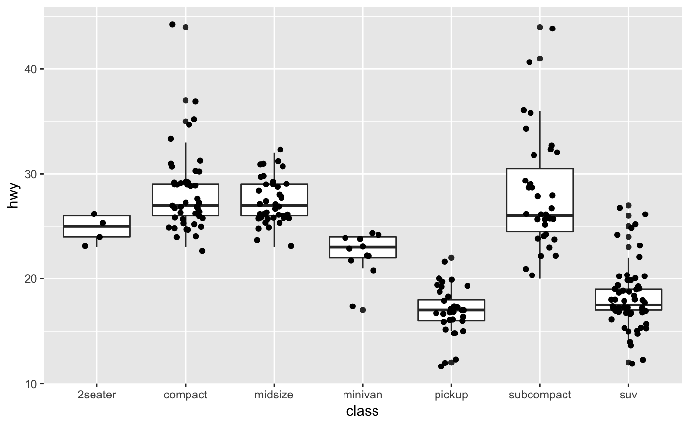
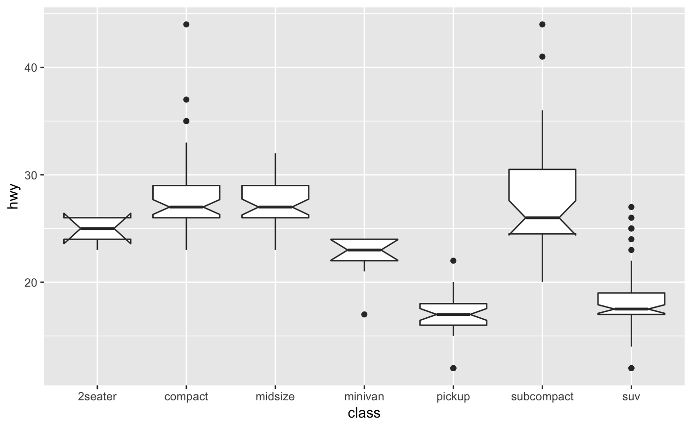
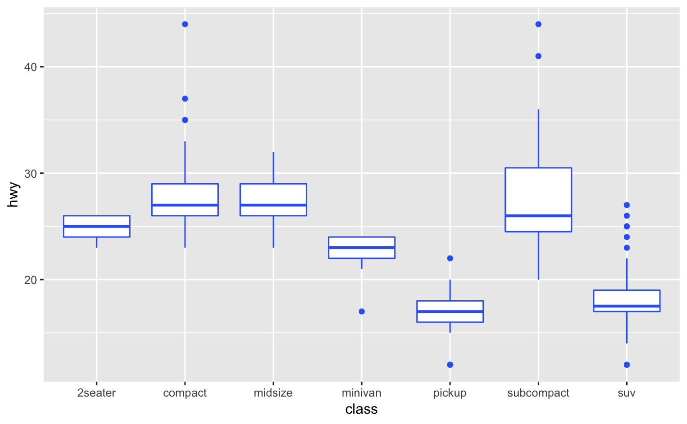
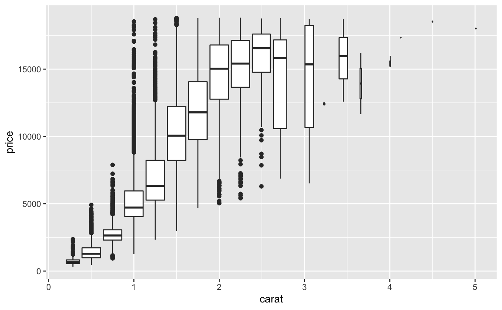
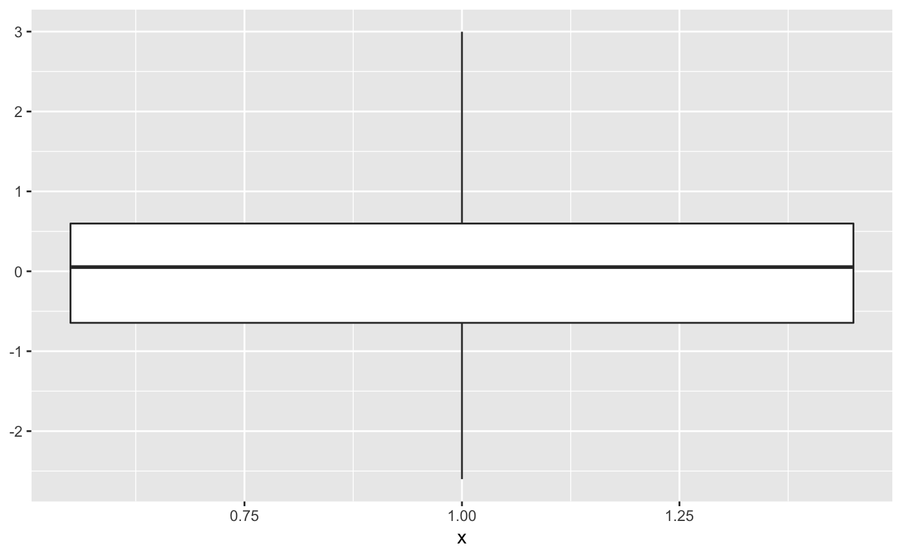
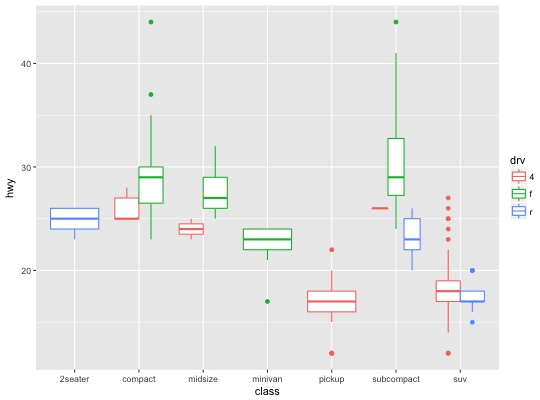
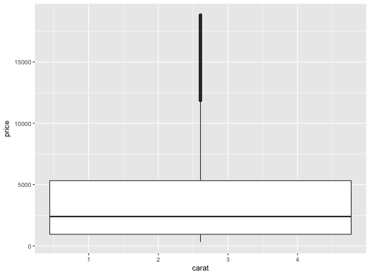
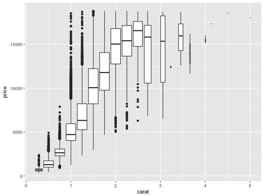
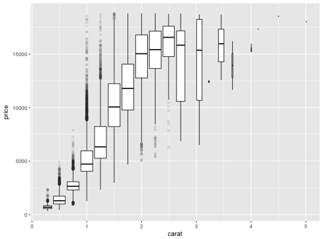

A box and whiskers plot (in the style of Tukey)
The boxplot compactly displays the distribution of a continuous variable. It visualises five summary statistics (the median, two hinges and two whiskers), and all "outlying" points individually.
geom_boxplot(mapping = NULL, data = NULL, stat = "boxplot", position = "dodge", ..., outlier.colour = NULL, outlier.color = NULL, outlier.fill = NULL, outlier.shape = 19, outlier.size = 1.5, outlier.stroke = 0.5, outlier.alpha = NULL, notch = FALSE, notchwidth = 0.5, varwidth = FALSE, na.rm = FALSE, show.legend = NA, inherit.aes = TRUE) stat_boxplot(mapping = NULL, data = NULL, geom = "boxplot", position = "dodge", ..., coef = 1.5, na.rm = FALSE, show.legend = NA, inherit.aes = TRUE)
Arguments
- mapping
- Set of aesthetic mappings created by
aesoraes_. If specified andinherit.aes = TRUE(the default), it is combined with the default mapping at the top level of the plot. You must supplymappingif there is no plot mapping. - data
- The data to be displayed in this layer. There are three
options:
If
NULL, the default, the data is inherited from the plot data as specified in the call toggplot. Adata.frame, or other object, will override the plot data. All objects will be fortified to produce a data frame. Seefortifyfor which variables will be created. Afunctionwill be called with a single argument, the plot data. The return value must be adata.frame., and will be used as the layer data. - position
- Position adjustment, either as a string, or the result of a call to a position adjustment function.
- ...
- other arguments passed on to
layer. These are often aesthetics, used to set an aesthetic to a fixed value, likecolor = "red"orsize = 3. They may also be parameters to the paired geom/stat. - outlier.colour, outlier.color, outlier.fill, outlier.shape, outlier.size, outlier.stroke, outlier.alpha
- Default aesthetics for outliers. Set to
NULLto inherit from the aesthetics used for the box. In the unlikely event you specify both US and UK spellings of colour, the US spelling will take precedence. - notch
- if
FALSE(default) make a standard box plot. IfTRUE, make a notched box plot. Notches are used to compare groups; if the notches of two boxes do not overlap, this suggests that the medians are significantly different. - notchwidth
- for a notched box plot, width of the notch relative to the body (default 0.5)
- varwidth
- if
FALSE(default) make a standard box plot. IfTRUE, boxes are drawn with widths proportional to the square-roots of the number of observations in the groups (possibly weighted, using theweightaesthetic). - na.rm
- If
FALSE, the default, missing values are removed with a warning. IfTRUE, missing values are silently removed. - show.legend
- logical. Should this layer be included in the legends?
NA, the default, includes if any aesthetics are mapped.FALSEnever includes, andTRUEalways includes. - inherit.aes
- If
FALSE, overrides the default aesthetics, rather than combining with them. This is most useful for helper functions that define both data and aesthetics and shouldn't inherit behaviour from the default plot specification, e.g.borders. - geom, stat
- Use to override the default connection between
geom_boxplotandstat_boxplot. - coef
- length of the whiskers as multiple of IQR. Defaults to 1.5
Summary statistics
The lower and upper hinges correspond to the first and third quartiles
(the 25th and 75th percentiles). This differs slightly from the method used
by the boxplot function, and may be apparent with small samples.
See boxplot.stats for for more information on how hinge
positions are calculated for boxplot.
The upper whisker extends from the hinge to the largest value no further than 1.5 * IQR from the hinge (where IQR is the inter-quartile range, or distance between the first and third quartiles). The lower whisker extends from the hinge to the smallest value at most 1.5 * IQR of the hinge. Data beyond the end of the whiskers are called "outlying" points and are plotted individually.
In a notched box plot, the notches extend 1.58 * IQR / sqrt(n).
This gives a roughly 95% confidence interval for comparing medians.
See McGill et al. (1978) for more details.
Aesthetics
\aesthetics{geom}{boxplot}
Computed variables
- width
- width of boxplot
- ymin
- lower whisker = smallest observation greater than or equal to lower hinge - 1.5 * IQR
- lower
- lower hinge, 25% quantile
- notchlower
- lower edge of notch = median - 1.58 * IQR / sqrt(n)
- middle
- median, 50% quantile
- notchupper
- upper edge of notch = median + 1.58 * IQR / sqrt(n)
- upper
- upper hinge, 75% quantile
- ymax
- upper whisker = largest observation less than or equal to upper hinge + 1.5 * IQR
References
McGill, R., Tukey, J. W. and Larsen, W. A. (1978) Variations of box plots. The American Statistician 32, 12-16.
See also
geom_quantile for continuous x,
geom_violin for a richer display of the distribution, and
geom_jitter for a useful technique for small data.
Examples
p + geom_boxplot(notch = TRUE)notch went outside hinges. Try setting notch=FALSE.notch went outside hinges. Try setting notch=FALSE.p + geom_boxplot(varwidth = TRUE)p + geom_boxplot(fill = "white", colour = "#3366FF")# By default, outlier points match the colour of the box. Use # outlier.colour to override p + geom_boxplot(outlier.colour = "red", outlier.shape = 1)# Boxplots are automatically dodged when any aesthetic is a factor p + geom_boxplot(aes(colour = drv))# You can also use boxplots with continuous x, as long as you supply # a grouping variable. cut_width is particularly useful ggplot(diamonds, aes(carat, price)) + geom_boxplot()Warning message: Continuous x aesthetic -- did you forget aes(group=...)?ggplot(diamonds, aes(carat, price)) + geom_boxplot(aes(group = cut_width(carat, 0.25)), outlier.alpha = 0.1)